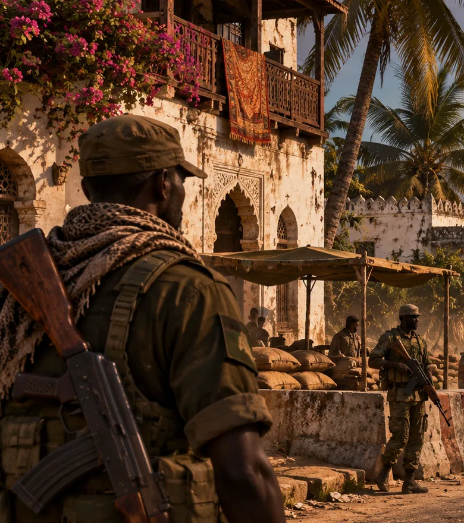

ВОЗМОЖНАЯ ГРУППА ДЛЯ РОЛЕВОЙ ИГРЫ
Медицинская миссия «Милосердие» — небольшая организация, пытающаяся лечить раненых без различия сторон.
Текст выше сохранён из авторского лора. Возможные цели, роли и внутренняя структура группы определяются игроками и администрацией.
← Ко всем группам